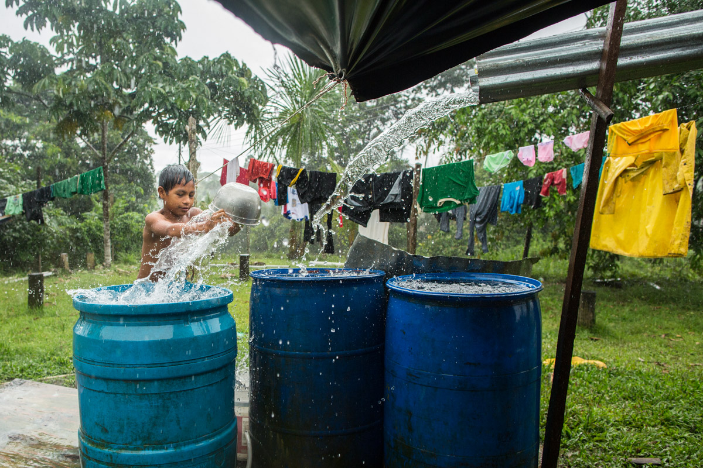

1 / 3

Rainwater is one of the most important natural resources for the Waorani, yet it is variable and unpredicatable, so each drop is protected. As communities grow, their need for potable water increases, and the dry months compound the scarcity even more.
2 / 3

Caption Two
3 / 3

Caption Three